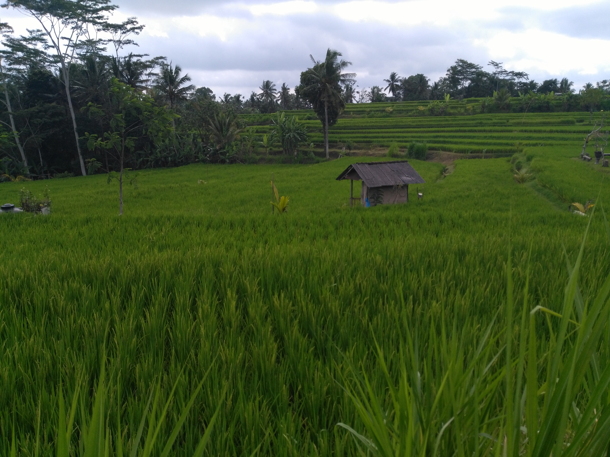
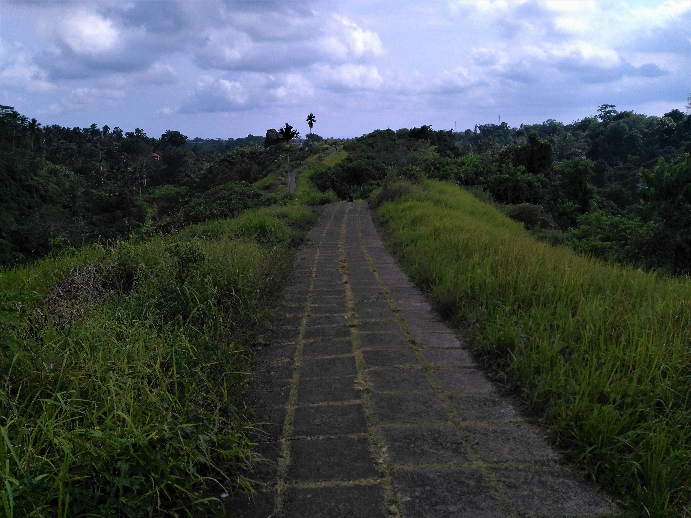
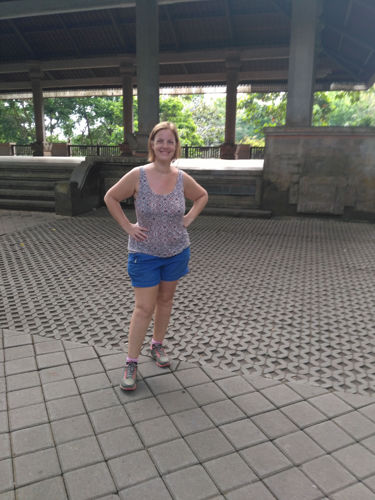
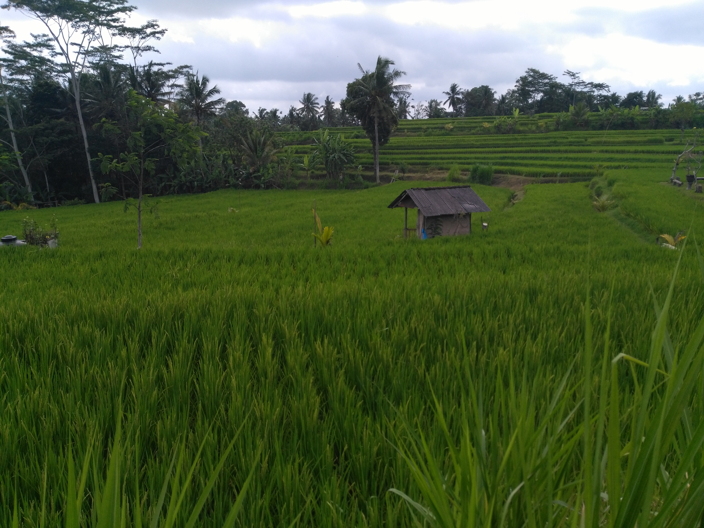
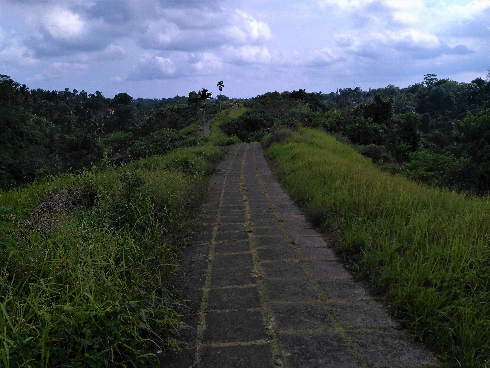
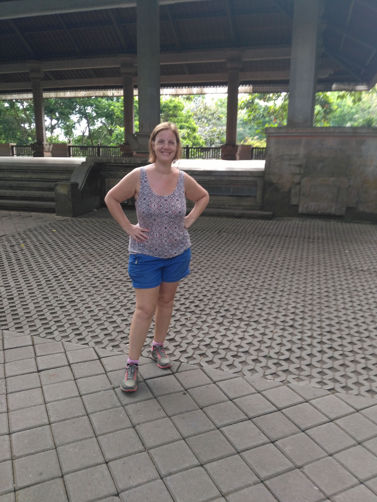
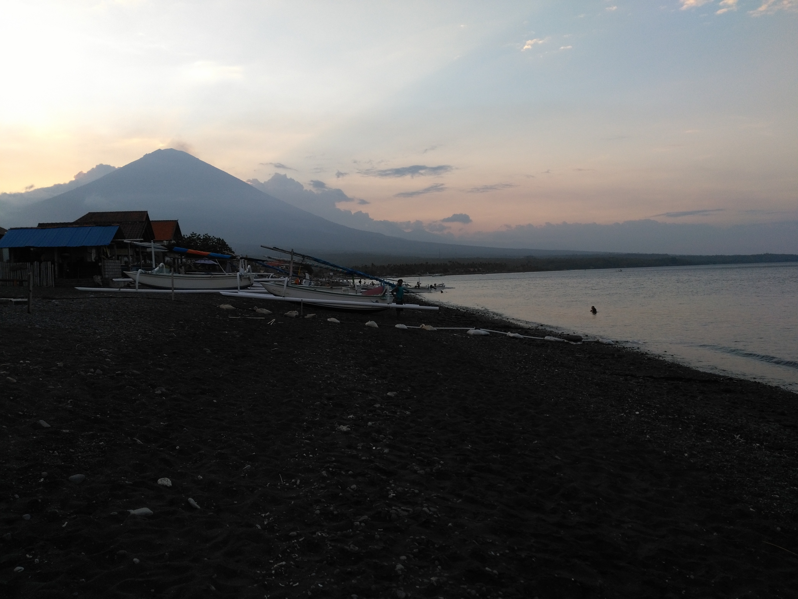
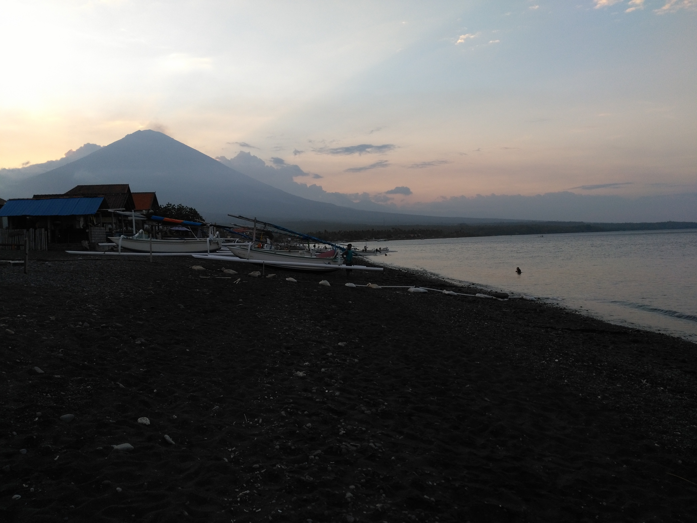

Ubud et Amed
Deux p'tites villes et puis s'en vont
Ubud
Fini le micmac avec le visa, après notre dernier rendez-vous à l'immigration, direction la très appréciée ville d'Ubud.
Ubud c'est la grosse fiesta car on a avec nous Aurélie et Rémy qui sont venus de Singapour pour le week end. Mais pour le moment, nous avons une journée avant leur arrivée où nous prenons la température de la ville. Nous arrivons donc le jeudi 18 octobre et avons pris une chambre (ou plûtot une sorte de sleeping box) en centre. La première impression sur Ubud (et la seconde aussi d'ailleurs), c'est qu'elle est colonisée par les touristes, et que l'ambiance générale du centre est très occidentalisée. Les boutiques, les bars et les restos sont quasi exclusivement tournés vers le touriste. Comme le dira Rémy, il y a du pimpin partout, c'est pimpinland !
Donc vendredi petite ballade tranquille tout les deux en ville à la recherche désespérée de pinceau à réservoir pour Sylvain. Impossible à trouver cette bête là et on est pourtant dans la ville des arts de Bali ! On est également allés au Neka Art Muséum, un musée de peinture bien sympa.
Le soir, les deux loustics arrivent, et on commence direct à mettre à l'épreuve la réputation de ville gastronomique d'Ubud. Niveau bouffe, on s'est bien bien fait plaisir et tout y est passé en trois jours : végétarien, indien, indonésien... Le pied !
Le lendemain direction le palais d'Ubud, où on se fait alpaguer par un viel américain de 79 ans à chemise hawaienne qui nous affirme 18 fois au moins qu'il faut absolument que nous allions à Tahiti et que c'est le meilleur endroit au monde. Il nous raconte des histoires un peu décousues, mais c'est bien drôle à écouter puis il nous dit qu'il nous enmène voir sa femme qui a 30 ans et qui est enceinte de lui, merci le viagra ! Pour aller voir sa femme, il pousse une porte du palais, marquée accès interdit, et nous voilà dans l'aile privée du roi. Il est ravi de nous montrer les bâtiments, et de nous raconter sa relation avec le roi et nous on est ravis de découvrir quelque chose de caché au public. Sa femme est bien enceinte, et est elle beaucoup moins ravie, il doit lui faire le coup 15 fois par jour.
Puis direction le temple Saraswati qui a un très chouette bassin rempli de nénuphars, puis la ballade Campuhan ridge walk qui permet de se promener hors de la ville une petite heure. On finit enfin cette première journée par la Monkey forest, qui est sans trop de surprise ... une forêt avec des singes : étonnant !
Le lendemain, on décide de sortir de la ville, trop heureux d'échapper aux foules. Direction Tegalalang et ses rizières en terrasse : 4 bus de touristes, parking payant, on ne s'arrête pas. On enchaîne direct sur le temple gunung Kawi Sebatu puis le temple gunung Kawi qui sont tout les deux très beaux, apaisants et peu fréquentés : tout ce qu'on aime dans un lieu de culte ! Par contre de notre troisième essai le Tirta Empul, nous n'en verrons que le parking déja ultra chargé de bus de touristes.
Direction ensuite les chutes d'eau Tucked Cepung, qui sont bien plus loin et nous valent une belle virée en scooter. Encore une fois, un très bel endroit peu fréquenté, parfait pour cette fin de journée. On accède aux chutes par une petite ballade les pieds dans l'eau et la magnifique cascade se trouve au fond d'une sorte de puit (une caverne sans toit). Excellent !
Le week end se finit sur cette belle note et nous reprenons chacuns notre route, nous vers la suite et Auré et Rémy vers Singapour.
Amed
Et la suite pour nous c'est Amed, un village au nord est de l'île. Dernière étape balinaise, mais pas des moindres car c'est décidé, on va faire un baptème de plongée !
Bon à ce moment-là, je faisais moins la maline : respirer avec des bouteilles, sous l'eau et surtout se retrouver au milieu de la poiscaille, tout ce que j'aime. On se décide donc pour un club de plongée qui nous a été recommandé : Abyss Dive Center. C'est un club tenu par des français, au top du top. La nana qui nous reçoit, Kim, répond direct à toutes nos questions et toutes nos appréhensions. On aura notamment un moniteur pour deux, ce qui est vaaaachement rassurant. Nous devons enfin répondre à un long questionnaire médical afin de cibler les risques. Bref on repart rassurés.
Le lendemain, 7h, ils passent nous chercher pour nous enmener sur le site. Au programme : des explications sur la plage puis départ pour une première plongée pour voir des coraux et poissons, suivie d'une seconde sur l'épave du Liberty. Le Liberty est un bateau américain qui transportait du caoutchou et qui s'est tout simplement fait torpiller par les japonais en 1946. Du coup l'équipage a réussi à le faire échouer sur la plage à coté d'Amed pour décharger la cargaison, puis ils l'ont laissé au bon soin des locaux. Il y a cinquante ans, une éruption volcanique à Bali et la techtonique des plaques l'a emporté sous l'eau, ce qui en fait aujourd'hui un des sites de plongée le plus chouette de l'île. Fin de l'instant culture !
Richard, notre super instructeur nous fait donc le débrief avant l'instant fatidique, puis il est temps d'enfiler la panoplie... On rentre dans l'eau en titubant, met nos palmes, le masque dans la bouche et c'est parti. Pour Sylvain et ses jolies oreilles, la descente n'est pas une partie de plaisir. Moi je me concentre sur les oreilles pour réaliser à un moment le volume d'eau au dessus de nos têtes. J'ai l'impression de suffoquer, il faut que je remonte tout de suite sinon je n'aurais jamais assez d'air... Non, je réussi à me calmer quand Richard détourne mon attention sur les poissons. Oh un poisson ! Oh un autre ! Encore un ! Et la respiration se calme et j'essaie d'oublier cette foutue masse d'eau au dessus. Première plongée vraiment réussie, avec des fonds marins de toute beauté, c'était assez ouf.
Pause avec les autres et des crèpes au sucre, puis c'est reparti.
La deuxième plongée dans l'épave est juste époustouflante. Le bateau, la lumière, la faune et la flore sont dingos. C'est à la fois glauque (mais dans le bon sens du terme) et magique. En plus on a vu des perroquets à bosse, qui sont apparement assez rares. Complètement fou !
La fin d'Amed signe la fin de Bali et nous repartons vers l'aéroport pour embarquer pour le Vietnam. Avant ça, nous réussissons à passer notre dernière soirée avec Mathilde, une riette exilée (comprenez notre voisine en vadrouille). Encore une très belle manière de clôturer notre premier pays !
Demain Ho Chi Minh City, j'ai hâte !
Maï
 







 
